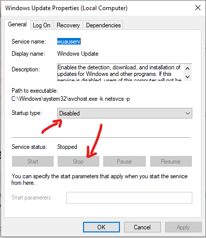
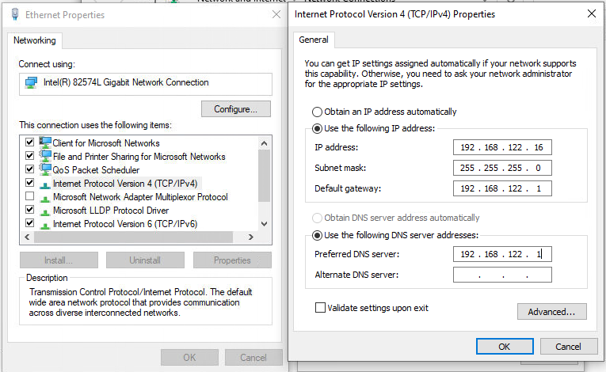

Network Configuration¶
Now it’s time to set up the network for your virtual machine.
Windows Settings¶
Before configuring the underlying networking of the virtual machine, you may want to tweak some settings inside Windows itself.
Two of the most important configurations to make are to disable Windows Firewall and Automatic Updates. The reason behind this is that these features can affect the behavior of the malware under normal circumstances and they can pollute the network analysis performed by CAPE, by dropping connections or including irrelevant requests.
Windows 10¶
To do so in Windows 10, open Control Panel and search for Windows Defender Firewall. Disable it completely:


The next step is disabling automatic updates. To do so, open Control Panel and search for Administrative Tools. Open it, then open Services. Look for the Windows Update entry and double-click on it. Set Startup type to disabled and click stop.

Windows XP¶
You can do so from Windows’ Control Panel as shown in the picture:

Virtual Networking¶
Now you need to decide whether you want your virtual machine to be able to access the Internet or your local network.
To make the virtual machine’s networking work properly you’ll have to configure your machine’s network so that the Host and the Guest can communicate.
Testing the network access by pinging a guest from the host is good practice, to make sure that the virtual network was set up correctly.
Only use static IP addresses for your guests, since CAPE doesn’t support DHCP (at least, as of this writing).
Warning
The range 192.168.122.0/24 is the default range for KVM’s first interface (usually virbr01) and it can be used as an ANTI VM check. If you want to read more about ANTI VM checks and how to set up your VM, check this KVM ANTIVM post.
The recommended setup is using a Host-Only networking layout with proper
forwarding and filtering configuration done with iptables on the Host.
We have automated this for you with:
$ utils/rooter.py
You can read more about rooter.py in its dedicated chapter: CAPE Rooter.
In the chapter Setting a static IP you will find the instructions for configuring a Windows guest OS to use a static IP. In the chapter Creating an isolated network you will find instructions on how to create an isolated network (usually referred to as hostonly) network and use it in your virtual machine. You can find further instructions on creating VMs with Virtual Machine Manage in this post.
Creating an isolated network¶
The recommended setup is using an isolated network for your VM. In order to do so, you can follow the instructions below if you are using KVM and virt-manager (Virtual Machine Manager).
First, in the Virtual Machine Manager GUI click con Edit -> Connection Details.

In the opened window click on the + sign, at the bottom left corner of the image. We are now defining the details of the new network. Give it a name (hostonly, for example) and make sure you select Isolated mode. Then, click on the IPv$ configuration drop-down menu and define the range of your network. In the image below only the third octet is changed.

Once the new isolated network is created, if you already created a VM, you can select it from Virtual Machine Manager by clicking Show virtual hardware details of that specific VM. Then click on the network adapter and choose the recently created network. Then click Apply.

The next thing is checking the new interface was indeed created and the VM is actually using it. From your Host, execute the following command from a command prompt:
> ip a

There should be an interface with the IP address you specified while creating it. in the image above the specific interface is virbr1.
From the guest VM (Windows OS in this example) execute the following command from a command prompt:
> ipconfig
The assigned IP should be in the range of the hostonly network.
The guest VM and host must have connectivity between them. In order to check it, you can use tools like ping or telnet.

Please bear in mind that this time the IP is assigned via DHCP, something CAPE does not support. Please set a static IP for your VM. Next chapter has instructions on that.
Setting a static IP¶
To set up a static IP it is first recommended to inspect the assigned IP, which will be (ideally) in the range of your interface (presumably y virbr0). To see your actual IP settings execute the following command from a command prompt:
> ipconfig /all

Note
The IP addresses and ranges used throughout this chapter are just examples. Please make sure you use your own working configurations and addresses.
Open Control Panel and search for Network. Find and open the Network and Sharing Center. Click Change adapter settings.

Now open the Ethernet adapter and click Properties.

Then click Internet Protocol Version 4 (TCP/IPv4) and Properties. Set the IP address, Subnet mask, Default gateway and DNS Server according to the results of the ipconfig command.
Note
You can set as static IP address the address previously given by DHCP or any other address you like within the range of your interface.
Wait a few seconds and you should have Internet access (in case you are using NAT. Bear in mind an isolated network will not provide Internet connection).
It is important to check connectivity between the Host and the Guest, like in the previous chapter.
This stage is very much up to your requirements and the characteristics of your virtualization software.
Warning
Virtual networking errors! Virtual networking is a vital component for CAPE. You must be sure that connectivity works between the host and the guests. Most of the issues reported by users are related to an incorrect networking setup. If you aren’t sure about your networking, check your virtualization software documentation and test connectivity with
pingandtelnet.
Disable Noisy Network Services¶
Windows 7 introduced new network services that create a lot of noise and can hinder PCAP processing. Disable them by following the instructions below.
Teredo¶
Open a command prompt as Administrator, and run:
> netsh interface teredo set state disabled
Link Local Multicast Name Resolution (LLMNR)¶
Open the Group Policy editor by typing gpedit.msc into the Start Menu search box, and press Enter.
Then navigate to Computer Configuration> Administrative Templates>
Network> DNS Client, and open Turn off Multicast Name Resolution.
Set the policy to enabled.
gpedit.msc missing¶
Warning
If gpedit.msc is not present in your system (if you are using Windows 10 Home Edition, for example), you can enable it by executing the following commands from an Administrator command prompt:
> FOR %F IN ("%SystemRoot%\servicing\Packages\Microsoft-Windows-GroupPolicy-ClientTools-Package~*.mum") DO (DISM /Online /NoRestart /Add-Package:"%F")
> FOR %F IN ("%SystemRoot%\servicing\Packages\Microsoft-Windows-GroupPolicy-ClientExtensions-Package~*.mum") DO (DISM /Online /NoRestart /Add-Package:"%F")
If the commands were successful, you should now be able to execute Run (Win+R) -> gpedit.msc.
Network Connectivity Status Indicator, Error Reporting, etc¶
Windows has many diagnostic tools such as Network Connectivity Status Indicator and Error Reporting, that reach out to Microsoft servers over the Internet. Fortunately, these can all be disabled with one Group Policy change.
Open the Group Policy editor by typing gpedit.msc into the Start Menu search box, and press Enter.
Then navigate to Computer Configuration> Administrative Templates>
System> Internet Communication Management, and open Restrict Internet Communication.
Set the policy to enabled.